PL/SQL Developer. 2. Выполнение запросов и редактирование данных.
Выполнение запросов
После подключения добавляем новое Sql-окно
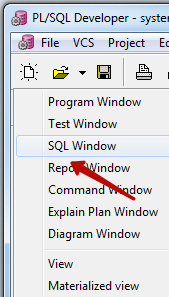
Пишем запрос, нажимаем F8 или кнопку на панели инструментов и получаем таблицу - результат запроса.
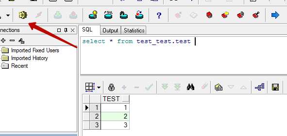
Если в результате запроса возвращается много строк то сразу все они не загружаются. Загружаются столько строк сколько помещается на экране, для загрузки остальных строк становятся активны две кнопки
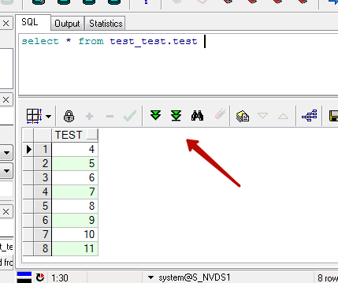
Чтобы загрузить все записи нужно нажать правую.
История запросов
Если отправить несколько запросов подряд то справа становятся доступны кнопки по которым можно переключатся по истории запросов. Кнопка "вверх" отобразит предыдущий отправленный запрос, а кнопка "вниз" следующий.
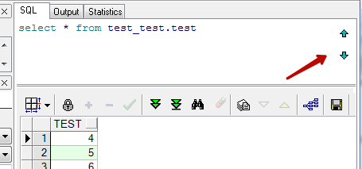
Экспорт результатов запроса
Часто результат запроса нужно экспортировать, для этого есть отдельная кнопка. Экспортировать можно в том числе в виде Sql скрипта который будет содержать insert'ы выбранных записей
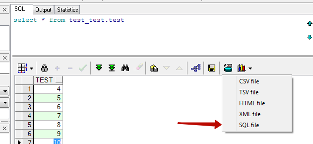
Режим просмотра одиночной записи
В случае если в таблице много полей бывает полезен режим просмотра одиночной записи. В этом случае выводится таблица с двумя столбцами - название поля и значение. Переключение по записям происходит по кнопкам на панели инструментов.
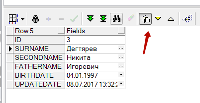
Редактирование данных, которые вернул запрос
Для того чтобы отредактировать записи, которые попали в выборку, в запрос нужно добавить специальное поле rowid. Теперь после нажатия на кнопку с замком, активируется режим редактирования, в котором доступны кнопки для добавления и удаления записей.
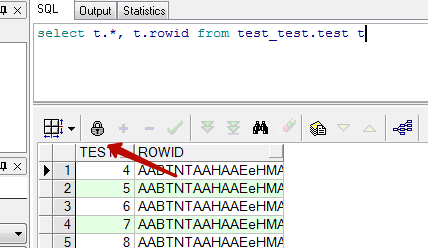
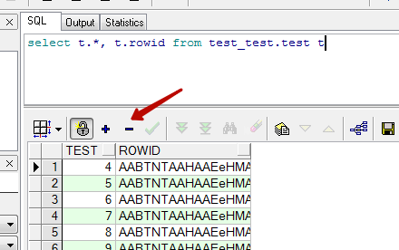
Редактирование осуществляется в самой таблице
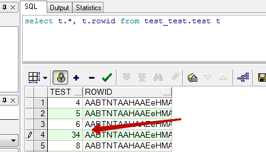
Для сохранения изменений нужно нажать две кнопки - Post и Commit.
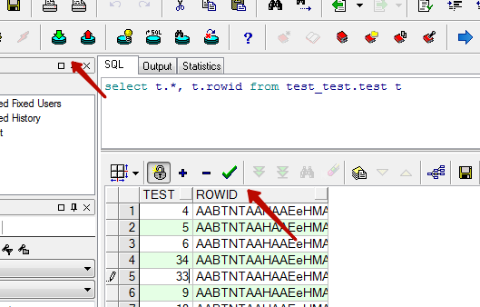
Откатить не зафиксированные изменения можно кнопкой Rollback
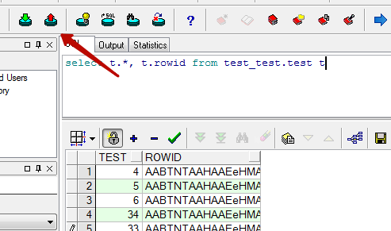